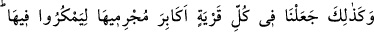
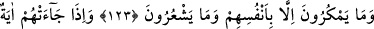
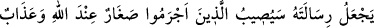
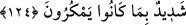

GEÇMİŞ ÜMMETLERİN
DURUMLARI
123. Böylece biz, her kasabada, oralarda bozgunculuk yapmaları için,
günahkârlarını liderler yaptık. Onlar yalnız kendilerini aldatırlar, ama farkında
olmazlar.
124. Onlara bir âyet geldiğinde, Allah’ın elçilerine verilenin benzeri bize de
verilmedikçe kesinlikle inanmayız, dediler. Allah, peygamberliğini kime vereceğini
daha iyi bilir. Suç işleyenlere, yapmakta oldukları hilelere karşılık Allah tarafından
aşağılık ve çetin bir azap erişecektir.
“Böylece” Mekke’nin fasıklarını, uluları yaptığımız gibi “her beldede günahkarları,
oranın liderleri kıldık ki, orada hilekârlık yapsınlar.” Çünkü idâre onlarda olduğu için
her türlü hile, haksızlık, baskı ve halk arasında bâtılı yaymaya başkalarından daha
muktedir olurlar. Nitekim Kureyş’in önde gelenleri ve mücrimleri, her yolun başına dört
nöbetçi bırakırlar, bu nöbetçiler insanları Hz. Muhammed (s.a.)’e inanmaktan men
ederler ve yoldan geçenlere şöyle derlerdi: “Zinhar, şu adamdan sakının. Çünkü o
kâhindir, sihirbazdır ve yalancıdır. ”
Beğavî der ki: Bu bir sünnetullahtır ki, her beldede peygamberlere öncelikle
insanların zayıf olanları îman etmişlerdir. Nitekim Nuh (a.s.)’a inanmayan o beldenin
önde gelenleri şöyle demişlerdir: “Sana bir sürü bayağı kimseler uymuşken biz sana
inanır mıyız?” (eş-Şuarâ, 26/111) Allah, o beldenin fâsıklarını, orada hile yapmaları
için uluları kılmıştır.
(
) “hile”, gizlice ve iki yüzlülükle bozgunculuk için çalışmaktır, bozgunculuk için
gizli planlar kurmaktır.
Bu ayet, Rasûlullah (s.a.)’i teselli etmektedir.
“Onlar kendilerinden başkasını aldatmıyorlar,” Çünkü yaptıklarının vebâli
kendilerinedir. “ama” bunun hiç “farkında değiller.” Aksine kendilerinin başkalarını
aldattıklarını zannediyorlar.